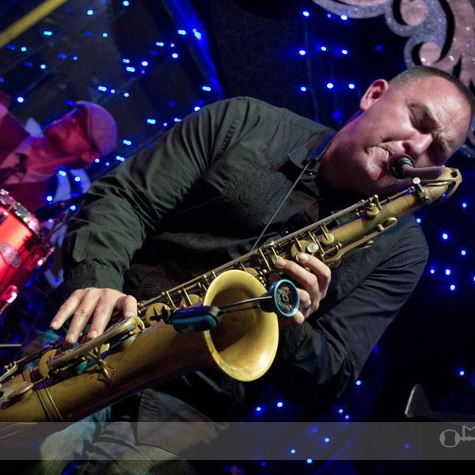

 "If you don't live it, it won't come out of your horn" -Charlie Parker
I have been attending Reynolds Community College since the Fall semester of 2017. My decision to study at Reynolds was based on location and subject matter. After my service in the Army, I wanted to learn a new set of skills in the field of technology all while supporting a family. This transition in my life has been quite the challenge and I remind myself consistently that I am capable and determined to succeed!
Obviously, I enjoy playing music. I have been playing the saxophone for 34 years and earned my Master’s of Arts degree in 2004. Most of my summers are spent taking trips to Virginia Beach to go swimming and fishing. Whenever I have an opportunity, I like to go skiing in the winter. I do my very best to live for today and not yesterday or tomorrow.
Here is a recording I made in a studio with fellow musicians from Richmond, Virginia.
If you would like to hear me play the flute, click on the word flute below.